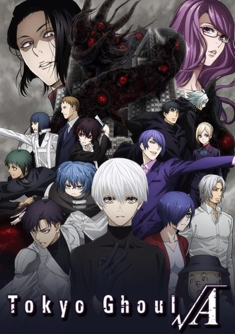

Tokyo Ghoul is set in an alternate reality where ghouls, creatures that look like normal people but can only survive by eating human flesh, live among the human population in secrecy, hiding their true nature in order to evade pursuit from the authorities. Ghouls have powers including enhanced strength and regenerative abilities - a regular ghoul produces 4–7 times more kinetic energy in their muscles than a normal human; they also have several times the RC cells, a cell that flows like blood and can become solid instantly. A ghoul's skin is resistant to ordinary piercing weapons, and it has at least one special predatory organ called a kagune (Japanese: 赫子), which it can manifest and use as a weapon during combat. Another distinctive trait of ghouls is that when they are excited or hungry, the color of their sclera in both eyes turns black and their irises red.
